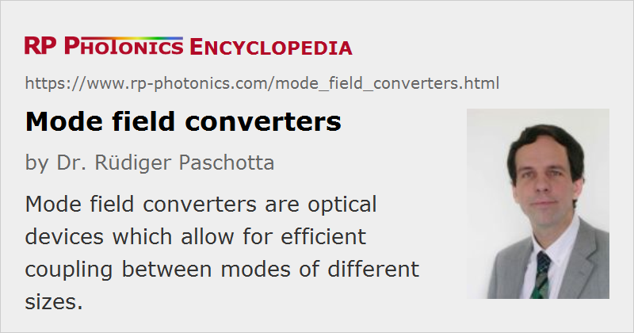

Mode Field Converters
Definition: optical devices which allow for efficient coupling between modes of different sizes
Alternative term: mode field adapters
Categories: fiber optics and waveguides, photonic devices
How to cite the article; suggest additional literature
Author: Dr. Rüdiger Paschotta
A mode field converter (or mode field adapter) is an optical device which can be used for expanding or contracting a mode in the transverse spatial dimensions. For example, a mode converter could expand the very tiny mode of the waveguide in a laser diode to a size which fits to the mode of an optical fiber. Here, the effective mode area may be increased from the order of 1 μm2 to roughly 100 μm2, as is appropriate for a usual single-mode fiber. This allows one to efficiently couple light from the laser diode into the fiber. Particularly for single-mode waveguides, efficient coupling is possible only when the mode radii of the two waveguides are approximately equal. (The article on fiber joints contains a formula for estimating the minimum coupling loss.) Note also that one requires not only compatible dimensions and shapes of the intensity profiles, but also compatible wavefronts – for example, plane wavefronts at the input of a single-mode fiber.
In principle, a mode field converter may simply be made of a single optical lens. Here, the light exiting the first waveguide first expands in free space, and then it is refocused to a spot with appropriate size by the lens. The input of the second waveguide is placed at that beam focus.
In many situations, however, it is desirable to avoid any free-space propagation and also to obtain a monolithic and more compact solution. Therefore, other technical approaches for mode field converters are often used. A particularly often used type of device is a tapered waveguide (→ tapered fibers). Here, the transverse dimensions of the waveguide and thus the local mode area vary smoothly. If the mode size varies sufficiently slowly within the waveguide, the mode can adiabatically adjust its parameters, so that it is everywhere close to the mode size calculated for a waveguide with constant transverse dimensions according to the considered position. However, non-adiabatic mode conversion is also possible with appropriately designed mode converters. This can lead to still more compact solutions. Very different kinds of non-adiabatic mode converters have been developed, often not at all based on tapered waveguides. For example, some nanotechnology devices exploit surface plasmons.
Questions and Comments from Users
Here you can submit questions and comments. As far as they get accepted by the author, they will appear above this paragraph together with the author’s answer. The author will decide on acceptance based on certain criteria. Essentially, the issue must be of sufficiently broad interest.
Please do not enter personal data here; we would otherwise delete it soon. (See also our privacy declaration.) If you wish to receive personal feedback or consultancy from the author, please contact him e.g. via e-mail.
By submitting the information, you give your consent to the potential publication of your inputs on our website according to our rules. (If you later retract your consent, we will delete those inputs.) As your inputs are first reviewed by the author, they may be published with some delay.
See also: modes, effective mode area, mode radius, fibers, fiber joints, tapered fibers, waveguides
and other articles in the categories fiber optics and waveguides, photonic devices
|  |
If you like this page, please share the link with your friends and colleagues, e.g. via social media:
These sharing buttons are implemented in a privacy-friendly way!